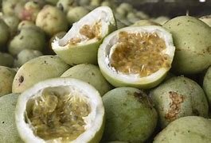
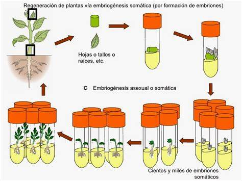

Implementación de Técnicas de Cultivo con la Especie Passiflora maliforne (Cholupa) en la Institución Técnico Ambiental
Introducción
Bienvenidos Para iniciar nuestra presentación, queremos enfocarnos en la importancia de la implementación de técnicas de cultivo de Passiflora maliforme, comúnmente conocida como cholupa. Este proyecto surge en respuesta a la creciente demanda de prácticas agrícolas sostenibles que optimicen los recursos y mejoren la producción de cultivos autóctonos en nuestro país.
La cholupa es una planta de la familia de las pasifloras que, además de su valor comercial, tiene propiedades nutritivas significativas y es parte de la biodiversidad regional. Sin embargo, su cultivo no ha sido suficientemente explorado en la región. Por eso, hemos orientado este proyecto a aplicar y evaluar técnicas de cultivo eficientes y sostenibles en el entorno de la Institución Técnico Ambiental, donde se promueve una formación técnica con un enfoque ambiental..

Beneficios
beneficio 1: Conservación de especies nativas y biodiversidad: El cultivo de la cholupa contribuye a preservar esta especie autóctona de Colombia, promoviendo la biodiversidad y fortaleciendo el patrimonio agrícola regional.
beneficio 2: Fortalecimiento de la economía local: La implementación de técnicas de cultivo efectivas puede aumentar la producción de cholupa, ofreciendo una oportunidad para que los agricultores generen ingresos adicionales y diversifiquen sus cultivos.
beneficio 3: Formación técnica en prácticas sostenibles: Este proyecto brinda a los estudiantes de la Institución Técnico Ambiental una experiencia práctica en agricultura sostenible, promoviendo conocimientos que pueden aplicarse en otros cultivos y favoreciendo la conservación del suelo y los recursos naturales.

Riesgos
riesgo 1: Descomposición del sustrato: El sustrato de coco puede descomponerse con el tiempo, especialmente si se expone constantemente a la humedad. Esto puede afectar negativamente la salud de las plantas y requerir reemplazo o renovación periódica del sustrato.
riesgo 2: Plagas y enfermedades: Las pasifloras son vulnerables a plagas como los ácaros y a enfermedades fúngicas, que pueden afectar la salud de las plantas. Si no se identifican y controlan a tiempo, estas amenazas pueden disminuir significativamente la calidad y cantidad de la cosecha..
riesgo 3: Falta de experiencia en técnicas de cultivo: Dado que el cultivo de cholupa no es común en muchas áreas, puede faltar experiencia y conocimiento práctico sobre su manejo específico. Esto puede llevar a errores en el riego, la fertilización o el control de plagas, afectando el éxito del proyecto.